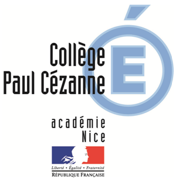

Mon parcours
Ayant toujours eu du mal avec l'école (le collège en particulier), je me suis tourné vers le seul domaine qui m'intéressait, l'informatique.
Après le collège, ne pouvant et ne voulant pas aller dans une fillière générale je me suis tourné vers un BAC Pro.
 J'ai donc intégré un BAC Pro Systèmes Electroniques et Numériques (SEN) Option EIE (Electronique Industrielle Embarquée) à Aix en Provence.
J'ai donc intégré un BAC Pro Systèmes Electroniques et Numériques (SEN) Option EIE (Electronique Industrielle Embarquée) à Aix en Provence.
C'est lors de ces trois années que j'ai vraiment trouvé ce que j'aime, la programmation, le travail en équipe, et l'envie d'en savoir toujours plus.
De par cette formation, j'ai énormément développé la compétence d'analyse d'un problème (et sa résolution) ainsi qu'un sens aigü de l'autodidaxie.
 Etant depuis toujours un bricoleur, j'avais ensuite besoins d'une formation plus manuelle, j'ai donc intégré un BTS Conception et Réalisation de Systèmes Automatisés (CRSA).
Etant depuis toujours un bricoleur, j'avais ensuite besoins d'une formation plus manuelle, j'ai donc intégré un BTS Conception et Réalisation de Systèmes Automatisés (CRSA).
Dans cette formation, j'ai fait de la programmation d'automate, beaucoup de conception 3D (sous Solidworks) ainsi qu'une certaine quantité de travaux manuels pour la fabrication de machines et la conception de prototypes.
Ayant fait ma formation à Manosque, il m'a fallu travailler à Burger King afin de payer les charges liées à la location de l'appartement, les courses...
 Une fois cette formation terminée, je suis retourné dans le secteur informatique en intégrant Ynov Aix et me voilà à 20ans à faire ce que j'aime dans un environnement de travail où l'autonomie et l'autodidaxie sont de mises.
Une fois cette formation terminée, je suis retourné dans le secteur informatique en intégrant Ynov Aix et me voilà à 20ans à faire ce que j'aime dans un environnement de travail où l'autonomie et l'autodidaxie sont de mises.
Mes Formations
-

Mastère Informatique
Depuis Septembre 2020
Ynov Aix Campus -
BTS CRSA
2020
Lycée les Iscles (Manosque)
Conception et Réalisation de Systèmes Automatisés -

BAC PRO SEN
2018
Lycée St-Eloi (Aix en Provence)
Systèmes Electroniques et Numériques
Option EIE (Electronique Industrielle Embarquée) -
BIA
2016
Lycée St-Eloi (Aix en Provence)
Brevet d'Initiation Aéronautique -

Diplôme national du brevet
2015
Collège Paul Cézanne (Brignoles)
A Propos
- 06.07.56.44.74
-
- 24B Avenue Mirabeau,
- 13530 Trets
- Cyprien Siaud